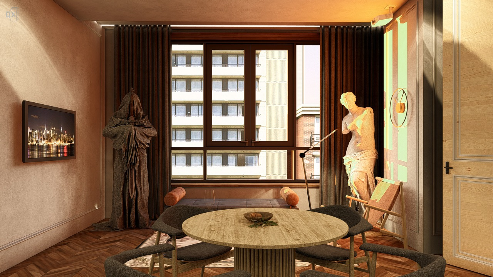
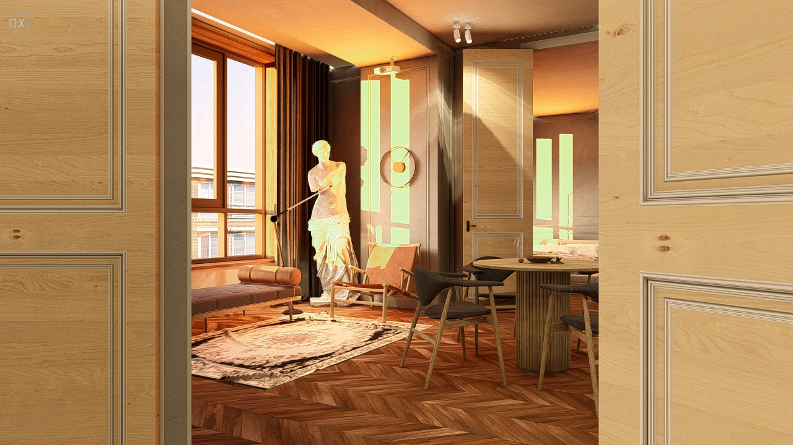

INTERIOR / VISUALIZATIONSTUDIOQUIX

GEEK HOUSE
INTERIOR / VISUALIZATION
COLLECTED
INTERIOR.
GEEK HOUSE / STUDIOQUIX
An apartment interior built around collected objects: statues, figures, a city-light painting and a wall of books.
Warm afternoon light moves through the living room and dining table, then gives way to the darker reading corner beyond.
LIVING AND DINING01

THROUGH THE DOORWAY02

READING CORNER03